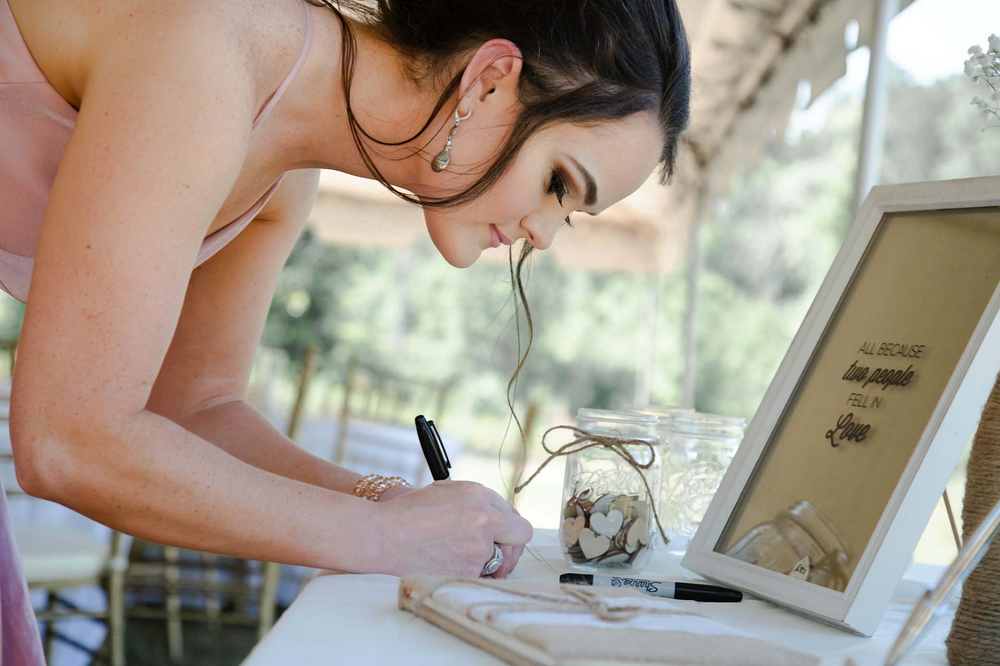

Wedding Planner — Sicilia
Organizzo matrimoni da sogno tra i colori e i profumi della Sicilia

Benvenuti
Ciao, sono Francesca. Da oltre 8 anni aiuto le coppie a trasformare il giorno più importante della loro vita in un'esperienza indimenticabile. Tra le coste frastagliate, i borghi antichi e i tramonti dorati della Sicilia, creo matrimoni che raccontano chi siete.
Perché scegliere me
Ogni dettaglio è pensato e creato intorno alla vostra storia. Nessun matrimonio è uguale all'altro, perché nessun amore lo è.
Mi occupo di tutto: location, catering, fiori, musica, fotografia. Voi dovete solo godervi il viaggio verso il grande giorno.
Conosco ogni angolo dell'isola. Dalle ville storiche alle spiagge nascoste, trovo il luogo perfetto per il vostro sì.
Dicono di noi
Francesca ha reso il nostro matrimonio a Taormina semplicemente magico. Ha capito subito la nostra visione e l'ha superata.
Professionale, creativa e con un gusto impeccabile. Non avremmo potuto chiedere di meglio per il nostro giorno speciale.
Ci ha tolto ogni stress e ci ha regalato il matrimonio dei nostri sogni. La villa, i fiori, la cena — tutto perfetto.
Il primo passo verso il matrimonio dei vostri sogni comincia con una conversazione.
Contattami